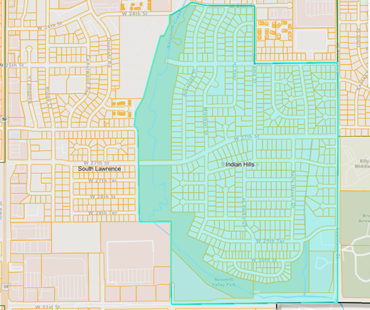

Indian Hills Neighborhood Association
Established 1974
Lawrence’s First Neighborhood Association
Several neighborhood improvement organizations and civic groups were active in Lawrence before 1974. However, Indian Hills was organized during a period when the City of Lawrence established formal guidelines for neighborhood associations, including defined boundaries, organized leadership, and representation for all residents living within those boundaries, regardless of membership status or dues.
Under this new framework, Indian Hills became one of the first officially recognized neighborhood associations in the city and helped establish a model for inclusive neighborhood representation. Rather than speaking for only a select group of members, the association was organized to represent the interests and concerns of everyone who lived within the neighborhood's boundaries.
What began as a grassroots effort by neighbors working together to protect their community evolved into a lasting organization that has advocated for residents, parks, trails, traffic safety, and quality of life throughout its history.
This distinction is why the association has long identified itself as "Lawrence's First Neighborhood Association." It reflects not only our early place in the city's neighborhood association movement, but also a pioneering commitment to inclusive neighborhood representation, community involvement, and resident-led advocacy.
Source Note: This interpretation is based on Lawrence Journal-World historical reporting, City of Lawrence neighborhood records, and the association's 1985 History of Indian Hills publication. Earlier neighborhood improvement organizations existed in Lawrence prior to 1974; the distinction refers to the development of the city's modern neighborhood association framework and resident-representation model.
The Role in the Creation of the Lawrence Association of Neighborhoods
Following its revitalization in the mid-1980s, the Indian Hills Neighborhood Association played a role in establishing the Lawrence Association of Neighborhoods (LAN), helping create a citywide network dedicated to strengthening communication and cooperation among Lawrence neighborhoods.
LAN was founded to provide neighborhood organizations with a stronger collective voice and a forum for sharing information, resources, and advocacy efforts. The organization continues to serve as an important connection between neighborhoods, residents, and local government.
LAN’s slogan, Neighbors working for Neighbors
, expresses this citywide commitment to neighborhood-to-neighborhood support.
Today, as part of the association's ongoing revival, IHNA is once again a proud member of LAN and remains committed to supporting collaboration among neighborhoods across Lawrence.
Source Note: Historical records, including Lawrence Association of Neighborhoods archival materials and research on Lawrence neighborhood organizations, identify IHNA as one of the neighborhood associations involved in the creation and early development of LAN during the 1980s. LAN's mission to support communication, cooperation, and neighborhood advocacy is documented by both LAN and the City of Lawrence.
Neighborhood Boundaries
Louisiana St. (east), W. 31st St. (south), Naismith Valley Park (west), and W. 24th & W. 25th St. (north).
View the neighborhood boundaries map

Neighborhood Meetings
Billy Mills Middle School Cafeteria
Past Meetings & Minutes
Billy Mills Middle School Cafeteria
October 6, 2026 meeting agenda
October 6, 2026 meeting minutes
Neighborhood Survey
We want to hear from neighbors about community priorities, concerns, and ideas for improving the Indian Hills neighborhood.
Board Nominations
Nominate yourself or a neighbor for the Indian Hills Neighborhood Association board by November 1, 2026. Voting runs November 3 through November 10.
Open the board nomination form
Nomination data as of October 21, 2026
Does not include second-choice nominations.
| Role | Volunteers | Duties |
|---|---|---|
| President | 1 | Leads the board and runs board and general meetings. Serves as the main spokesperson for the neighborhood with the City, partner organizations and the media. |
| President-Elect | 0 | Supports the President and fills in when the President is unavailable. Becomes President the following year. |
| Secretary | 1 | Records and distributes meeting minutes, keeps official records and bylaws, and sends meeting notices. |
| Treasurer | 1 | Manages the association's funds, including dues, donations, budget and bank accounts. Gives financial reports at meetings. |
| Communications Director | 0 | Manages the newsletter, website, social media and email updates. |
| Events & Social Chair | 0 | Plans neighborhood gatherings, welcomes new residents and recruits volunteers. |
| Safety & City Liaison | 0 | Connects the neighborhood with the city, LAN and local agencies on traffic, zoning and public safety. |
| Beautification & Green Space Chair | 1 | Leads projects that improve shared spaces, such as entrance signs, plantings and trees. |
| Block Captain Coordinator | 0 | Builds a network of volunteer block captains who share news street by street. |
| Member-at-Large (Seat 1) | 2 | Represents the general membership and helps with projects and committees as needed. |
| Member-at-Large (Seat 2) | 1 | Represents the general membership and helps with projects and committees as needed. |
Mailing List (ListServ)
Receive neighborhood notices, meeting updates, and community announcements from the Indian Hills Neighborhood Association.
Website Archive
Browse past neighborhood event pages and the 27th Street Safe Streets Campaign.